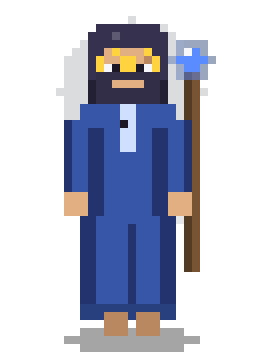
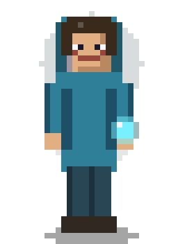
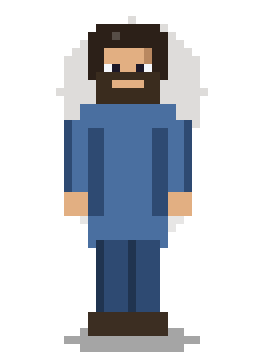
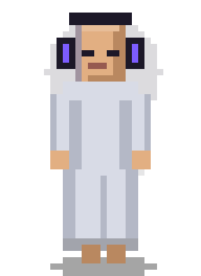
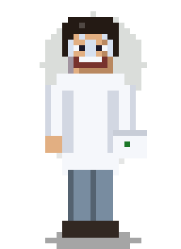

O Mundo de Algorithmia
Como tudo começou — e quase terminou em um belo erro 500.
Houve um tempo em que uma IA Ancestral dava todas as respostas. Que conveniente. Aos poucos, os programadores esqueceram como pensar — até que a IA travou no Grande Timeout, e o mundo quase virou um belo erro 500.
Os Cinco Mestres selaram a IA no Abismo do /dev/null e fundaram a Ordem do Código Limpo — porque nada diz "trauma coletivo" como um culto à indentação. Mas os Fragmentos da IA voltaram a circular… e os bugs também.
Você acorda na Vila Hello World sem memória, sem nome e — claro — sem documentação. Na mão, três Fragmentos: em apuros, eles sussurram a resposta no seu ouvido, gentis como um colega que cola na prova. Só que cada atalho desses corrói um pedaço da sua alma. Detalhe.
Os Cinco Mestres
Cada um guarda uma região e uma disciplina. Derrote os bugs do seu domínio para aprender com eles.

Willen
"Antes de correr, aprenda a indentar."
Ergueu o Porto da Sintaxe sobre os escombros do Grande Timeout. Dizem que lê um sistema inteiro só de olhar para um arquivo. Acredita que toda grande aventura começa com um Hello, World bem escrito.

Clayton
"Não copie o comportamento: herde a ideia, componha a solução."
Na Cidadela dos Objetos, tudo é classe e instância. De moletom azul e sorriso tranquilo, ensina que o mundo é feito de moldes — e que reaproveitar é mais sábio do que repetir.

Marcelo
"Estrutura errada transforma um passeio em O(n²)."
Cruza a Floresta das Estruturas a bordo de seu lendário Gol quadrado cinza, o único veículo capaz de atravessar as Árvores Balanceadas. Mede o tempo do mundo em notação Big-O.

Cesar
"Toda função tem um limite. Inclusive a sua paciência com a IA."
No topo da Montanha do Cálculo, medita com seus headphones, ouvindo o ritmo dos números. Enxerga padrões onde os outros só veem caos — e foi o primeiro a perceber a aproximação do Lorde Segfault.

Cassandro
"Mandei a mensagem. Cadê o seu ...ACK?!"
A Torre das Conexões tem sete andares — um para cada camada do modelo OSI. De óculos e sorriso largo, garante que toda mensagem do reino chegue ao destino.
A Jornada
Do Hello World ao Abismo, passando pelas cinco regiões dos Mestres.